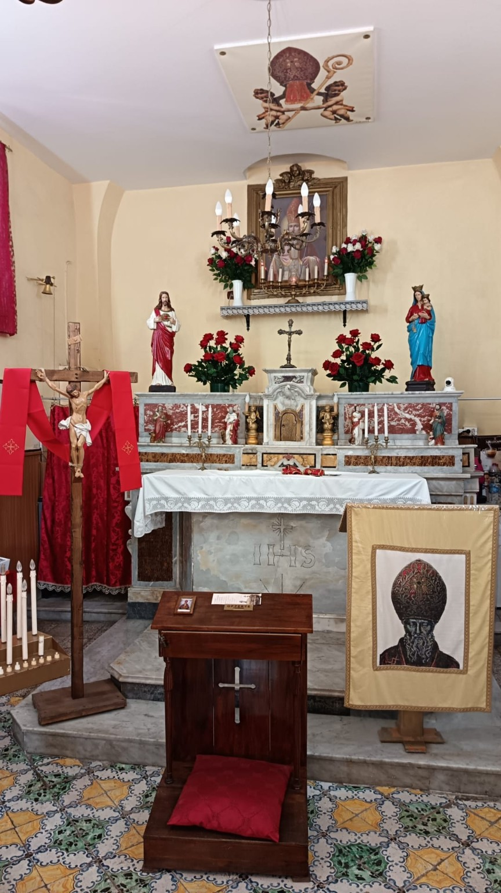
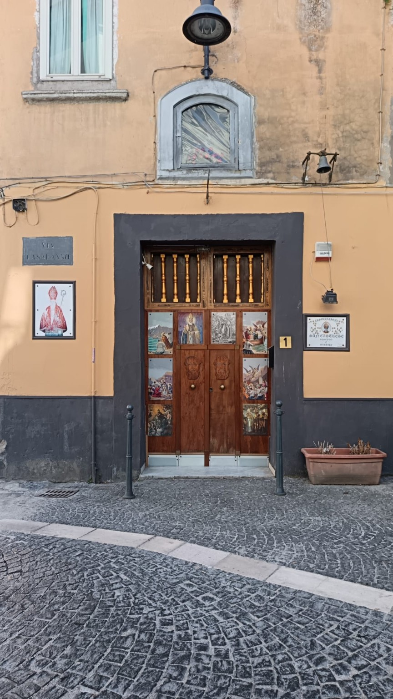
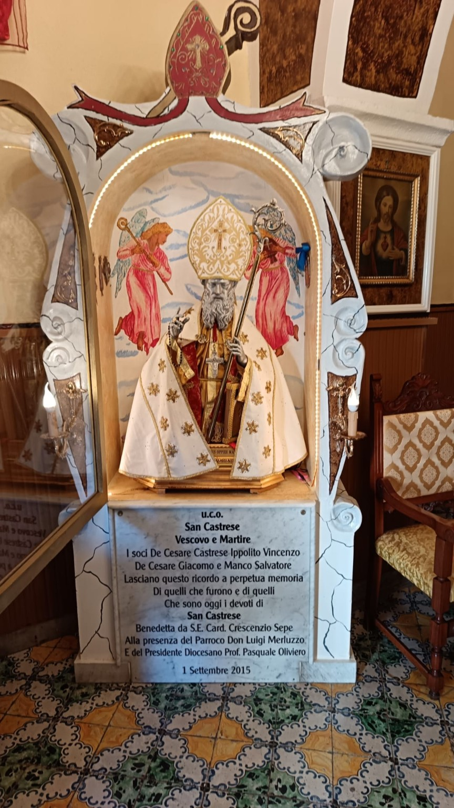
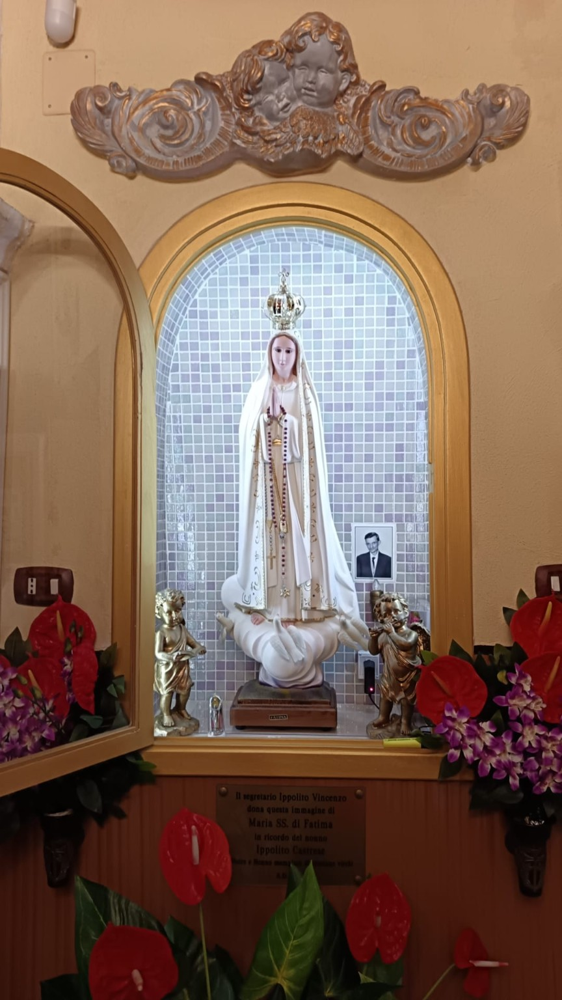
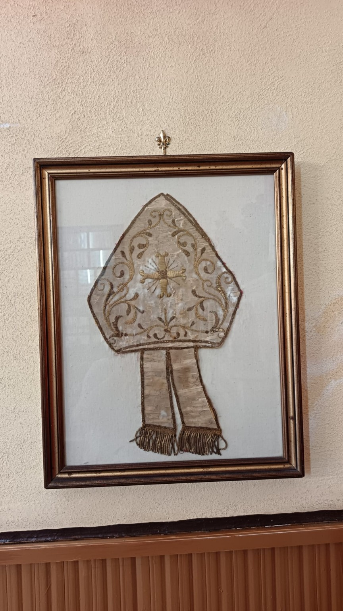
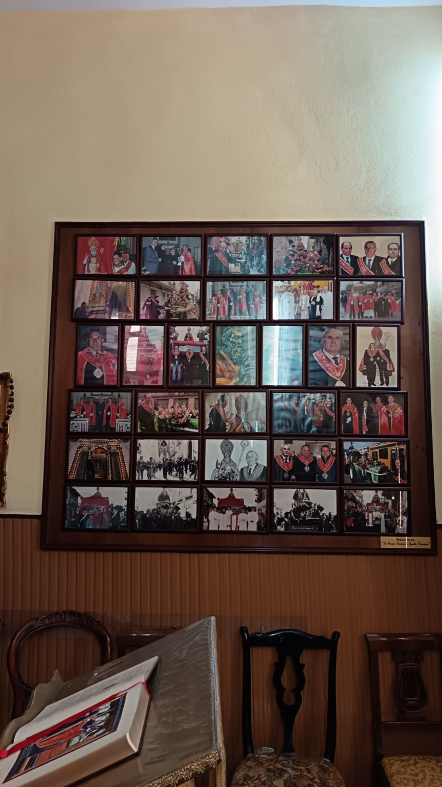

ALL’INTERNO DELLA SEDESan CastreseVia Casalanno 1 · Marano di Napoli
← Home
Castrensis · Via Casalanno 1
La casa dell’Associazione.
Uno spazio di incontro, custodia e partecipazione nel cuore di Marano di Napoli.
Via Casalanno 1 · Marano di Napoli
La sede dell’Associazione.
La sede dell’Associazione.
Memoria e partecipazione.
La sede dell'Associazione è il punto di incontro per chi vuole approfondire la storia di San Castrese e conoscere da vicino una realtà che opera da oltre un secolo.
01Conosci l’Associazione
Approfondisci la storia, il patrimonio e le persone che ne custodiscono l’identità.
02Esplora il patrimonio
Oggetti, insegne, fotografie, documenti e memorie raccontano un pezzo di Marano.
03Partecipa
Le iscrizioni 2026 sono aperte a chi desidera contribuire attivamente.
SEDE ASSOCIATIVA
Via Casalanno 1
80016 · Marano di Napoli (NA)
INGRESSO DELLA SEDE
1909fondazione storica
2015rinascita associativa
Via Casalanno 1sede dell'Associazione
2026iscrizioni aperte
Memoria Castrensis · Via Casalanno 1
La sede come luogo di memoria.
La sede come luogo di memoria.
Uno spazio di incontro e partecipazione.
La sede riunisce spazi di incontro, testimonianze devozionali, documenti e memorie della vita associativa. È il riferimento per chi desidera conoscere più da vicino la storia dell’Associazione San Castrese.
INCONTRA
Conosci l'Associazione
Scopri chi la anima, da dove nasce e perché continua a custodire il rapporto tra la città e il Patrono.
OSSERVA
Conosci il patrimonio devozionale
Le reliquie e gli oggetti devozionali custoditi in sede avranno schede dedicate, fotografie ad alta definizione e una storia da leggere anche online.
SCOPRI
Consulta l'archivio della memoria
Fotografie, tessere, gonfaloni, documenti e testimonianze possono raccontare decenni di vita associativa e cittadina.
PARTECIPA
Vivi le attività
La sede è anche vita associativa: incontri, preparazione delle iniziative, conservazione della memoria e accoglienza di chi vuole partecipare.

Un patrimonio che appartiene alla città e passa di generazione in generazione.
Dal 1909
Una presenza concreta.
Scopri come partecipare →
Una presenza concreta.
Una storia che continua.
L'Associazione San Castrese è una realtà storicamente radicata nel territorio maranese, impegnata nella custodia della memoria del Patrono e nella valorizzazione delle tradizioni cittadine.
La sua identità vive dentro la sede e sul territorio: conservazione della memoria, partecipazione alle ricorrenze, iniziative culturali, pellegrinaggi, Peregrinatio e attività legate alla tradizione di San Castrese.
01MemoriaConservare testimonianze e patrimonio.
02IdentitàRafforzare il legame tra Santo e città.
03TradizioneTrasmettere riti e ricorrenze nel tempo.
04ComunitàPartecipare e coinvolgere nuove generazioni.
La sede realeSpazi, devozione e memoria.
Spazi, devozione e memoria.
Dentro Via Casalanno 1.
Una selezione di immagini degli ambienti e delle testimonianze custodite nella sede dell’Associazione.




